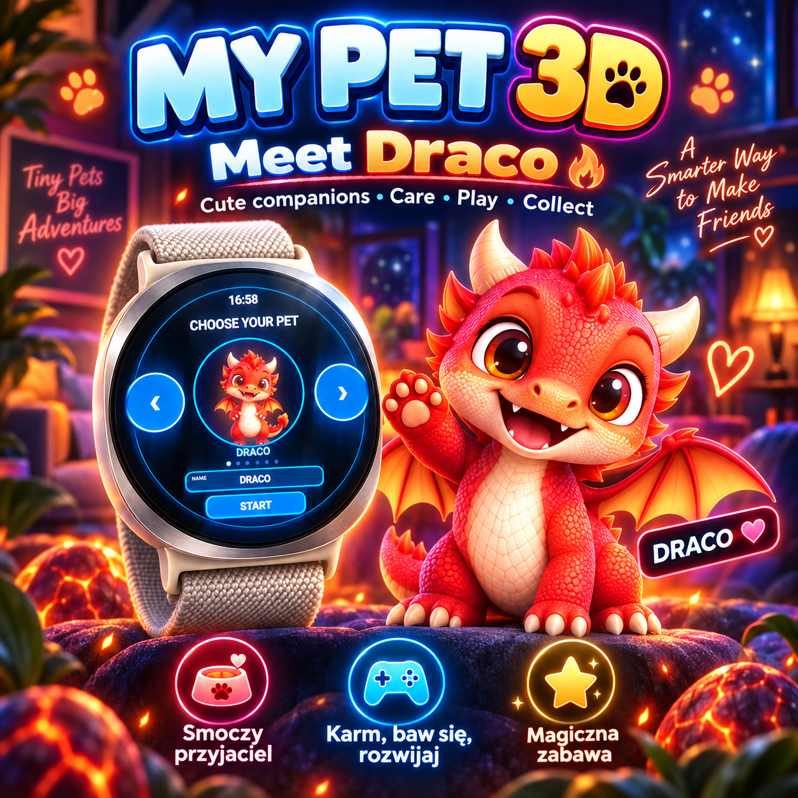

Teman hewan virtual
Rawat hewan peliharaan dan nikmati aktivitas yang tersedia pada versi yang terpasang.
Semua aplikasi / MY PET 3D / Android
ARVION · MY PET 3D · Android
Game hewan peliharaan virtual Android dengan ruang dan aktivitas, menggunakan grafis sprite 2.5D berwarna.

Teman hewan virtual. Rawat hewan peliharaan dan nikmati aktivitas yang tersedia pada versi yang terpasang.
Rawat hewan peliharaan dan nikmati aktivitas yang tersedia pada versi yang terpasang.
Permainan menampilkan ruang dan latar, bukan sekadar ikon hewan statis. Interaksi bergantung pada versi.
MY PET 3D menggunakan gambar 2D/2.5D yang memberi kesan kedalaman, bukan model poligon 3D real-time.
Versinya disesuaikan untuk layar HP dan smartwatch. Periksa dukungan perangkat.
MY PET 3D menggunakan gambar 2D/2.5D yang memberi kesan kedalaman, bukan model poligon 3D real-time.
Fitur dapat berubah sesuai versi. Visual memakai sprite 2.5D, bukan model 3D real-time.
Bukan. Ini game hewan virtual independen buatan ARVION, bukan produk resmi merek Tamagotchi.
Tidak. Game memakai sprite 2D/2.5D dengan tampilan seperti 3D.
Tergantung model Wear OS serta dukungan di Google Play.
Merawat hewan dan menggunakan ruang serta aktivitas yang ada pada versi terpasang.
Sinkronisasi belum dikonfirmasi sehingga tidak dijanjikan.
Lihat katalog ARVION dan periksa ketersediaan di Google Play untuk perangkat Anda.
Periksa dukungan perangkat dan ketersediaan di Google Play sebelum membeli.